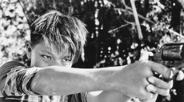

|
EBOLUSYON NG ISANG PAMILYANG PILIPINO
(EVOLUTION OF A FILIPINO FAMILY)
Lav Diaz | Philippinen 2004 | 643 Min.
Format: Beta SP | b&w
Original language : Tagalog
Script: Lav Diaz
Camera:Bahaghari, Paul Tañedo, Larry
Manda
Editing: Lav Diaz
Cast: Elryan de Vera, Pen Medina,
Angie Ferro, Ronnie Lazaro u.a.
Production: sine olivia
www.ebolusyon.com
Gawad Gurian Award, Philippines 2005
German Premiere
The film spans the Marcos regime’s state of siege in the Philippines (1971-1987). As the title indicates, Diaz follows the adventures of a family against the backdrop of the social and political developments in this crucial period in history. The Gallardo family lives from a strip of land on the edge of the jungle, and this works well for generations – until macroeconomics and politics rear their ugly heads, that is. The film follows various members of the family, such as the matriarchal grandmother Puning, her son Kayo, who is in danger of going astray, and her mentally confused daughter Gilda, but above all her grandson Raynaldo, who develops in the film from country and jungle child to urban adolescent. Another special detail is that as a result of the long period of shooting (nine years!), the actor playing Raynaldo (Elryan de Vera) really grows up. (Gertjan Zuilhof)
“In the film, I time capsuled the years between 1971 and 1987, a very significant period in our history. During this time, many events that occurred shaped our country wich still has a bearing in our present condition. There is a need for an examination of the Filipino psyche. The exercise gave me back my faith. History gave me back my faith. I want Filipinos to remember all those events. It’s an imperative. This is the vision of Ebolusyon.” (Lav Diaz)
Lav Diaz, born in 1958 in Cotabato/Philippines. Lives and works in the Philippines. He worked for a music magazine and experimented with both photography and writing before turning to filmmaking as a script writer. Diaz is one of the philippean filmmakers internationally known for their digital films about the Filipino “psyche”. Beside, Diaz is guitarist in the filmmaker’s rock band “Brockas”.
Films (selection): Serafin Geronimo - Ang kriminal ng Barrio Concepcion 1998 | Burger Boys: Laruang Kriminal 1999 | Batang West Side 2002 | Ebolusyon ng isang pamilyang pilipino 2004 | Heremias 2005 (work in progress)
back
|